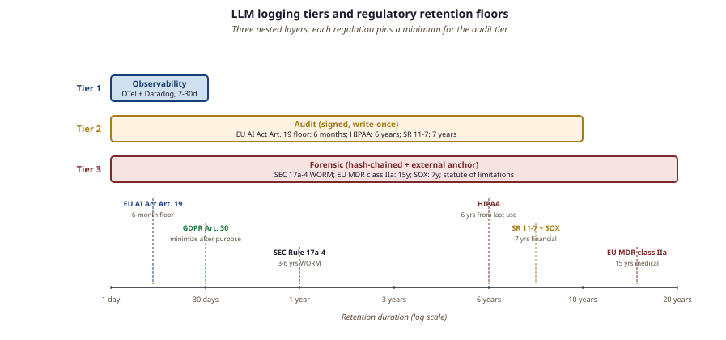

"Logging an LLM agent's every reasoning step is the cheapest insurance policy you will ever buy, and the only one that pays out at 3 AM."
Sage, Audit-Log-Stewart AI Agent
Model cards and system cards describe what a system is supposed to do; audit trails record what it actually did. Logging for compliance is harder than logging for observability because the requirements are stronger: tamper-resistance, retention policies anchored to legal requirements, access controls that survive insider threats, and the ability to reconstruct any decision the system made, with full context, on demand. This section covers what to log for AI systems, retention policies for the major regulatory regimes (EU AI Act, HIPAA, SR 11-7, GDPR), the access-control story, and the cross-link to the observability infrastructure from Part VIII Chapter 44. For LLM and agent systems, the per-request audit log is uniquely complex because each turn includes a prompt, retrieved RAG context, guardrail verdicts, model version, tool calls, and any agent-initiated side effects; getting all of that into write-once storage is what lets an LLM-powered product survive a regulator's "show me the decision trail" request.
Prerequisites
This section assumes the model-card discipline from Section 54.6. LLM observability, tracing tools, and the environmental-sustainability material are covered in detail later in the book.
54.9.1 The Three Purposes of Logging
OpenTelemetry, the spec that most LLM observability stacks now rely on, was born in 2019 when two competing CNCF projects (OpenTracing and OpenCensus) discovered they were splitting the engineering attention of the entire cloud-native community. The merger meeting was held over breakfast at KubeCon Barcelona, and the combined logo was reportedly designed in PowerPoint during a Q&A panel the next afternoon.
"Logging" is a single word for three distinct activities with different requirements.
Think of the three logging purposes as three filing cabinets in different rooms of a hospital. The observability cabinet sits in the ER lounge: any nurse can grab a chart to debug a beeping monitor, but nothing in there could ever be subpoenaed because charts are reshuffled every week. The audit cabinet sits in the records office behind a swipe-card door: every patient encounter is here in full detail for seven years, lockable but readable when a malpractice question arrives. The forensic cabinet sits in a notarized safe in the basement: every entry is hash-chained, time-stamped by a trusted third party, and signed by the attending physician's hardware key, because this is what shows up in court. Same data in all three, three completely different threat models, three different storage technologies, three different retention clocks. The architectural mistake the section warns about (one pipeline for all three) is the equivalent of running the ER, records, and basement-safe out of the same shared drawer.
- Observability logging exists to help engineers debug. It captures latency, error codes, resource usage, sometimes representative input/output samples. Retention: days to weeks. Access: broad within the engineering team. Tamper-resistance: not required. The canonical 2026 stack is OpenTelemetry traces flowing into Datadog, Honeycomb, or Grafana with a 7 to 30 day rollover; if an engineer accidentally drops an index, you re-derive what you need from production within an hour.
- Audit logging exists to reconstruct what the system did for a specific request, weeks or months after the fact. It captures inputs, outputs, model version, guardrail decisions, retrieval contexts, tool calls, with full fidelity. Retention: months to years, depending on regulatory regime. Access: tightly scoped, often security-team-only with break-glass procedures for incident response. Tamper-resistance: required (write-once, signed, time-stamped). When the EU AI Office sent its first Article 19 information requests to general-purpose model providers in early 2026, the audit log (not the observability trace) was the artifact that satisfied the response.
- Forensic logging exists for compliance investigations and litigation. It captures everything audit logging captures plus chain-of-custody metadata, hashes of model and dataset versions, the policy document in force at decision time. Retention: years (often the longer of a regulatory minimum and the statute of limitations for relevant claims). Access: legal-team-controlled with strict procedure. Tamper-resistance: cryptographically anchored; write to write-once media (S3 Object Lock, Azure Immutable Blob Storage). In the 2023 SEC enforcement actions against algorithmic-trading firms, forensic logs (signed, hash-chained, with model-version hashes) were the evidence that distinguished operator error from intentional misconduct.
The three layers are nested: forensic logs are a superset of audit logs which are a superset of observability logs. A common architectural mistake is to design one logging pipeline for all three purposes, which leads either to under-protecting forensic data or to over-spending on observability.
54.9.2 What to Log for an LLM System
The minimum fidelity audit log for an LLM-backed application captures, per request, the eight categories below. Each category exists because a specific kind of post-hoc question becomes unanswerable when it is missing: "Which model version actually served this request?" cannot be answered from a billing report; "What did the guardrail block, and on what grounds?" cannot be reconstructed from the model output alone. The categories are also stack-ordered: a request flows top-to-bottom (identifiers, then auth, then input, then model call, then guardrails, then output, then side effects), and the log entry mirrors that order so an investigator can read it as a timeline rather than a bag of fields.
- Request identifiers: timestamp (UTC, with millisecond precision), request ID, correlation ID for multi-step flows, user/session ID (or salted hash thereof). Without millisecond timestamps you cannot reconstruct concurrency-related bugs; the 2024 ChatGPT outage post-mortem turned on millisecond-level event ordering across three datacenters.
- Authentication context: caller principal, tenant ID, scopes/permissions in effect. Tenant ID is what lets you partition retention by jurisdiction (an EU tenant's records expire on a different clock than a US tenant's) without storing the actual user identity in the log row.
- Input: the raw user input, the system prompt version, retrieved documents and their source identifiers, attached files and their hashes. RAG document IDs plus content hashes are the only way to reconstruct "what did the model actually see"; storing just the user query is the single most common cause of unreproducible incidents.
- Model invocation: model identifier and version (exact hash, not just name), generation parameters (temperature, max_tokens, tool_choice), the prompt that was actually sent (after any retrieval and system-prompt assembly). The "gpt-4o" pointer rolled silently across at least four different model snapshots in 2024-2025; only the version hash distinguishes them.
- Guardrail decisions: each guardrail's identifier, version, verdict, and confidence score. The policy version in effect. When a user appeals a refusal, the policy version answers "was this blocked under the rules in force at the time?", which is a separate question from "would it be blocked today?"
- Output: the model's raw response, the post-guardrail final output if different, any tool calls and their results. The pre- and post-guardrail divergence is what shows whether an output-side filter rewrote, redacted, or fully replaced the model's text.
- Downstream effects: which action(s) the output produced (database writes, email sends, monetary transfers). For agentic systems, this is the largest single category and the one most often under-logged. Air Canada's 2024 chatbot refund judgment turned on missing logs of what the agent had actually committed to a user.
- Latency and cost: end-to-end latency, per-stage breakdown, token counts, dollar cost. Cost-per-record is what lets finance attribute spending to a tenant; token counts are the only way to reconstruct context-window-overflow incidents after the fact.
{
"event_id": "evt_01H8Z2K9Y6M5P3Q4R7S8T9V0W1",
"timestamp": "2026-05-16T14:23:18.421Z",
"request_id": "req_abc123",
"tenant_id": "tnt_acme",
"user_id_hash": "sha256:9f8e7d6c5b4a3210...",
"caller_principal": "client_credentials:billing_assistant",
"model": {
"name": "claude-3-7-sonnet",
"version_hash": "sha256:ab12cd34ef56...",
"provider": "anthropic"
},
"system_prompt_version": "v17",
"policy_version": "guardrails:2026-04-29",
"input": {
"user_message_redacted": "How much will my next bill be?",
"retrieved_docs": [
{"id": "doc_kb_142", "hash": "sha256:..."},
{"id": "doc_billing_july", "hash": "sha256:..."}
]
},
"guardrails": [
{"id": "prompt_guard_v2", "verdict": "BENIGN", "score": 0.99},
{"id": "topic_classifier_v3", "verdict": "in_scope_billing", "score": 0.97}
],
"output": {
"final_text_redacted": "Your next bill, due 2026-06-12, is $124.50.",
"tool_calls": [
{"tool": "lookup_billing", "args_hash": "sha256:...", "ok": true}
]
},
"metrics": {
"latency_ms": 1287,
"input_tokens": 1842,
"output_tokens": 47,
"cost_usd": 0.0061
},
"log_signature": "ed25519:7f6e5d4c3b2a1980..."
}log_signature field is an Ed25519 signature over the canonical-JSON representation of the rest of the record, signed by a hardware-key-backed signing service. The signature lets a future auditor verify that the record has not been altered since it was written. The user_id_hash and _redacted suffixes are GDPR/HIPAA hygiene: the log itself does not contain raw PII, but can be re-keyed to the original user via a secured side mapping if a regulatory request demands it.54.9.3 Retention Policies by Regulatory Regime
"How long do we keep logs?" is determined by the most demanding applicable regulation. For an LLM system serving multiple jurisdictions and use cases, the combined retention map looks roughly like this in 2026:
- EU AI Act Article 19: providers of high-risk AI systems must keep automatically-generated logs for "a period appropriate to the intended purpose," with a minimum of 6 months. National implementations often extend this to 2 years for specific high-risk categories.
- GDPR Article 30: records of processing activities indefinitely, but personal-data minimization principles mean the actual decision logs containing personal data should be kept only as long as necessary for the stated purpose and then anonymized or deleted.
- HIPAA: protected health information records must be retained for 6 years from the date of creation or last effective use.
- SR 11-7 (Federal Reserve model risk management): financial-services model logs must be retained for 7 years.
- Sarbanes-Oxley: financial-decision-supporting logs for 7 years.
- SEC Rule 17a-4: broker-dealer records for 3-6 years on write-once media.
- UK GDPR and DPA 2018: similar to EU GDPR but with separate national-court jurisprudence.
The deceptively simple "retain for 7 years" hides a lot of operational complexity: hot storage for the first 90 days (queryable with low latency), warm storage for the next year (queryable with higher latency), cold storage for the rest (recoverable on demand but expensive to access). The architecture has to support GDPR data-subject deletion requests, which under Article 17 require the operator to delete identifiable personal data in logs unless an overriding legal basis (e.g., financial-services retention requirement) applies.
54.9.4 Tamper-Resistance: Write-Once, Signed, Hash-Chained
The three layers of tamper-resistance, ordered by cost and strength. The right choice depends on threat model: write-once storage stops accidents and outside attackers; signing stops a storage-system compromise; hash chaining stops a trusted insider with admin authority. Most LLM products in 2026 ship with layer 1 by default and add layers 2 and 3 only when a regulated tenant signs a contract that requires them.
- Write-once storage. S3 Object Lock in Governance or Compliance mode, Azure Immutable Blob Storage, or an on-prem WORM (write-once read-many) appliance. Storage-layer guarantee that records cannot be modified during the retention window. Cheap; supported by most cloud providers. Object Lock in Compliance mode cannot be disabled even by the root AWS account during the retention period, which is the property an FDIC examiner will look for.
- Per-record signing. Each log record is signed with a hardware-key-backed key (HSM, AWS KMS, Azure Key Vault). The signature can be verified independently of the storage layer. Adds a few milliseconds per write and a verification cost per read; cryptographically strong. AWS KMS Ed25519 sign operations run in roughly 8-12 ms at the median, which is negligible against a 1-2 second LLM call but very visible if you naively sign small records in a tight loop.
- Hash chaining. Each record contains a hash of the previous record's signed envelope, producing a tamper-evident chain. The chain head is periodically anchored to an external authority (a public timestamping service, a separate-organization-controlled log, or even a public blockchain). Used by banks, election systems, and the most demanding compliance environments. Adds storage overhead and a small write-coordination cost. The Certificate Transparency ecosystem (RFC 6962, in production since 2013) is the canonical large-scale deployment: every TLS certificate from a major CA is hash-chained into multiple public logs, and tampering with any historical record is detectable by anyone with a chain walker.
![Diagram of a hash-chained audit log architecture. A sequence of audit log entries is shown horizontally. Each entry contains: event_id, timestamp, payload (the request/response details), previous_hash (a hash of the prior record's full content), and a signature over the entry. Arrows from each entry's previous_hash field point back to the prior entry, forming a chain. Every 10,000 entries, an anchor is published to an external timestamping service. Side annotation: 'tamper with one record and every subsequent hash breaks; auditor can detect insertion, deletion, or modification with a single chain walk.'](images/audit-log-chain.svg)

54.9.5 Access Controls and the Insider Threat
Audit logs are themselves a high-value target. They contain enough information to reconstruct user interactions (including sensitive ones), and they often contain credentials or session tokens unless those are carefully filtered out. The principle of least privilege applies hard:
- Engineers cannot read audit logs in normal operations. Observability dashboards expose anonymized aggregates, not raw entries.
- Security teams have read access for incident response, but log access is itself logged, creating a meta-audit trail. Suspicious patterns (engineer reading lots of unrelated entries) get flagged.
- Legal teams have access to forensic logs through a documented procedure, typically requiring legal-counsel approval and a written rationale, also logged.
- Customer access is mediated by an export API that lets a tenant pull their own logs but not others'. The export itself is logged.
An audit log that contains raw user messages, credit card numbers, and email contents is technically more useful for debugging, and a far larger compliance burden, than one that contains redacted versions and a separate-keyed mapping to the raw values. Most organizations should default to redacted logs with a side mapping kept under stricter access control. The architectural rule of thumb: if a developer has read access to logs, the logs should not contain raw PII. If access is tightly controlled (security/legal only) and the legal basis is strong, raw logs can be kept, but they should be encrypted with keys held by a different team than the one running the storage.
54.9.6 Cross-Link to Observability and Telemetry
The observability infrastructure described in Chapter 44 (LangSmith, Langfuse, OpenTelemetry traces, Datadog LLM monitoring) is largely not the compliance audit trail. Observability tools optimize for low-latency querying, broad engineering access, and aggregate analytics. Compliance audit trails optimize for tamper-resistance, controlled access, and per-record retrievability over years.
Production systems run both in parallel: every LLM call emits an observability trace (consumed by engineering dashboards) and an audit-log record (consumed by the compliance pipeline). The two share a common request ID so an investigator can pivot between them. The observability trace expires after 30 days; the audit record persists for years. Conflating the two and putting compliance data in the observability store is the failure mode that surfaces during the first regulatory subpoena.
The audit-log schema is more stable than the observability schema. Engineering needs evolve fast; the fields you want in Datadog change every quarter. Compliance fields, in contrast, are anchored to regulations and contracts that change on multi-year timescales. Designing two separate schemas, letting observability iterate while keeping audit-log schema versioned and migration-controlled, is the standard practice. Mixing them creates a treadmill of compliance-impacting schema migrations.
A B2B SaaS company runs an LLM-powered analyst assistant for clients in EU, US healthcare, and US financial services. The logging stack: (1) all requests emit OpenTelemetry traces to a 30-day Datadog-backed observability store; (2) all requests also emit signed audit records to S3 with Object Lock; (3) records carry tenant ID so they can be partitioned by jurisdiction and retention class; (4) EU tenants' records hot-store 90 days, cold-store 2 years; (5) US healthcare tenants' records hot-store 90 days, cold-store 6 years; (6) financial-services tenants hot-store 90 days, cold-store 7 years; (7) every 10,000 records, a hash-chain anchor is published to an internal-but-separate-org-controlled log; (8) GDPR data-subject deletion requests route through a dedicated workflow that hashes-and-replaces personal data fields in EU records while keeping the rest of the entry intact and re-signing. Total operational overhead: about 0.5 engineering FTE for build, ~0.2 FTE for ongoing maintenance.
Audit logging for compliance is a different problem than observability logging: stronger tamper-resistance, longer retention, tighter access controls, and schema stability anchored to regulations. For LLM systems, the minimum fidelity log captures inputs, retrieved context, model version, guardrail decisions, outputs, and downstream effects. Retention is the maximum of all applicable regimes (EU AI Act, HIPAA, SR 11-7, etc.). Tamper-resistance scales from write-once storage up to hash-chained external anchoring. The audit pipeline runs in parallel with, not as a substitute for, the observability infrastructure from Chapter 44.
Show Answer
Show Answer
Show Answer
Show Answer
Continue to Section 54.10: Explainability for High-Stakes Decisions.
Section 54.10 closes the chapter with explainability: when an AI system makes a high-stakes decision (a credit denial, a medical-triage recommendation), what tools let you reconstruct why? LIME, SHAP, attention visualization, and the emerging mechanistic-interpretability methods all have a role; we will see what each provides and the cross-link to the frontier-interpretability work in Part XV.